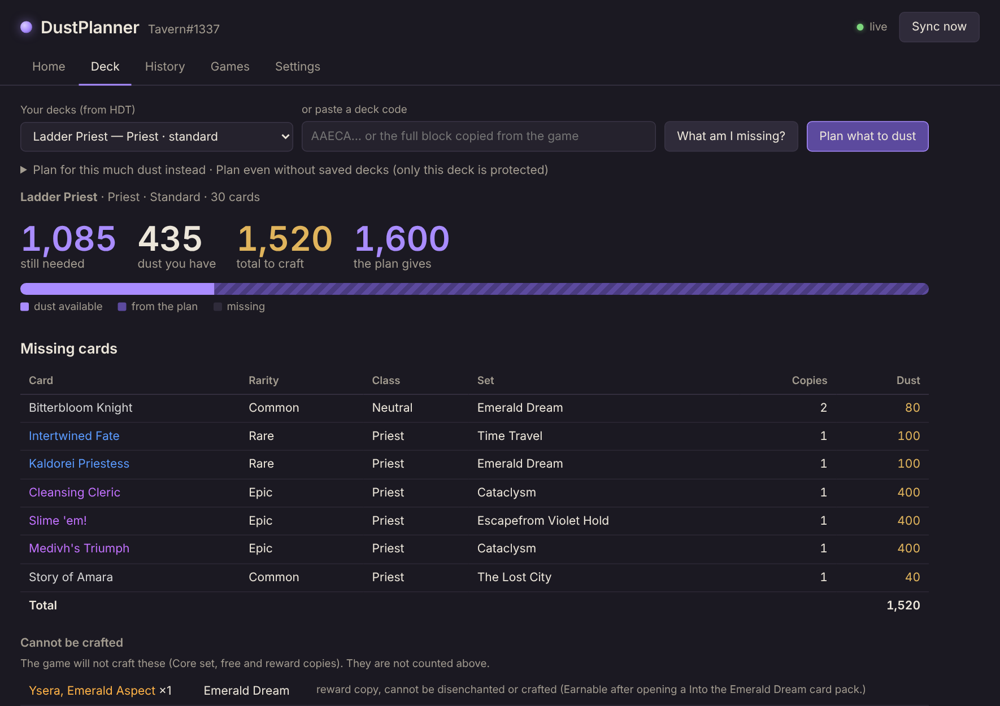
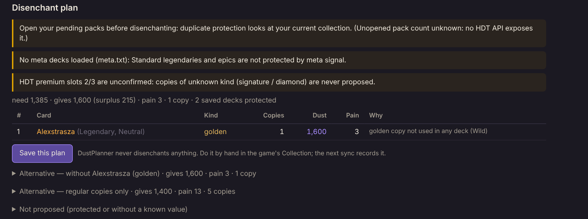
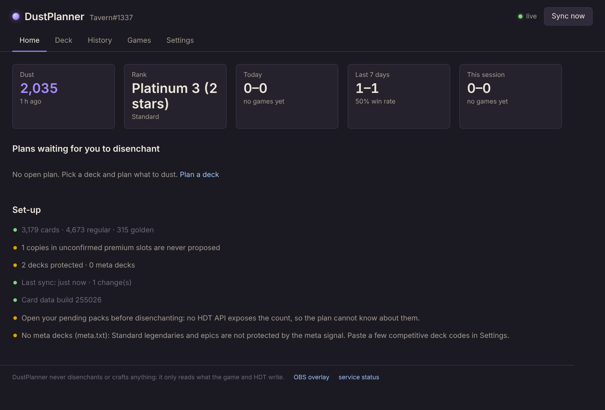
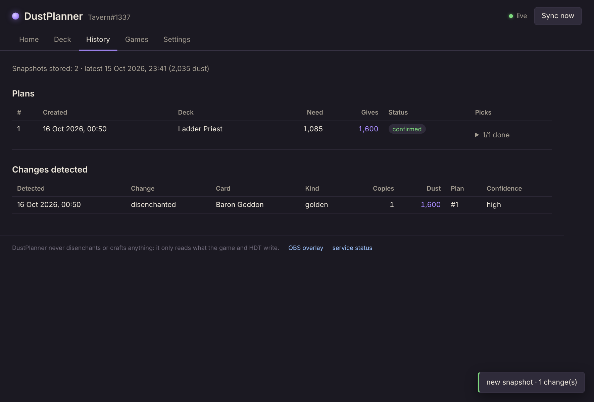
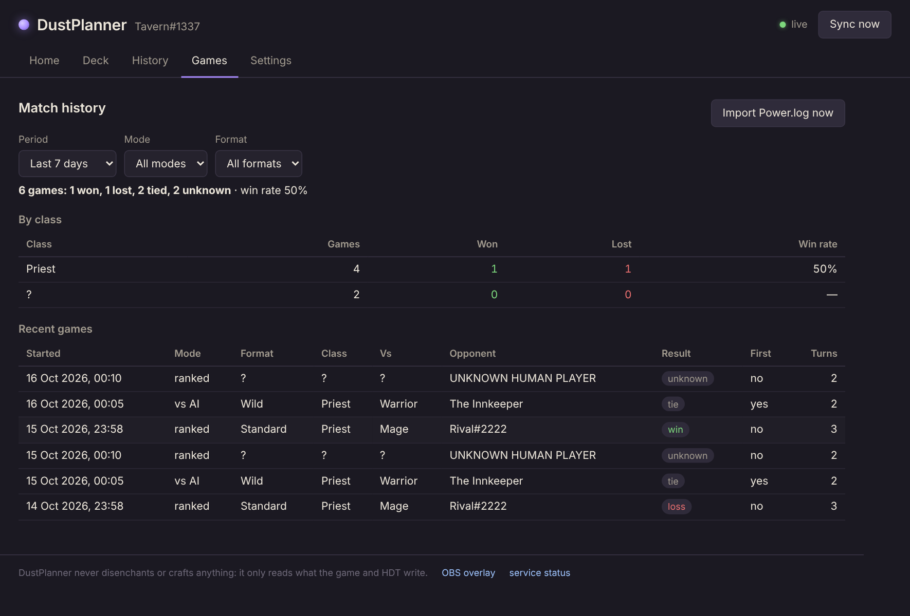
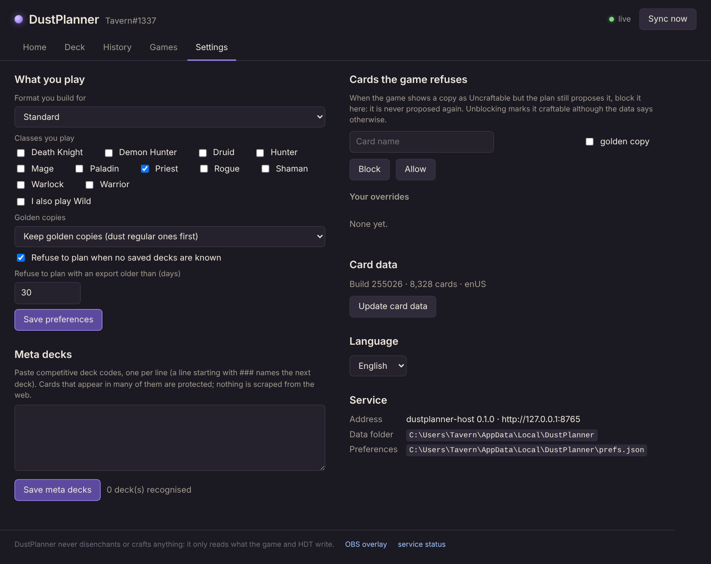
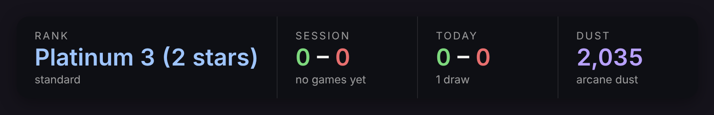

DustPlanner vive dentro de Hearthstone Deck Tracker. Elegí un mazo, mirá exactamente qué cartas te faltan y cuánto polvo son, y obtené la lista menos dolorosa de copias para desencantar y llegar — sin tocar tus mazos, las cartas del meta ni las copias que el juego se niega a craftear.
Windows · necesita Hearthstone Deck Tracker · gratis, licencia MIT · no hay que instalar nada más.

Tres piezas, y ninguna toca el cliente del juego. DustPlanner lee lo que Hearthstone Deck Tracker ya sabe y lo que el juego escribe por su cuenta; el desencantado lo hacés vos, a mano, en el juego.
Se abre desde el menú de plugins de HDT (Plugins → DustPlanner → Open DustPlanner), o directo al mazo seleccionado en HDT con What am I missing for the selected deck?. En inglés y español.
Elegí uno de tus mazos de HDT de la lista o pegá un código. Ves las cartas que faltan con su costo, la barra del polvo (lo que tenés, lo que da el plan, lo que todavía falta), las cartas que el juego no craftea y por qué, las que vienen incluidas con otra, y lo que sale de Standard en la próxima rotación.
Debajo, el plan: cada copia con su polvo y un por qué — "dorada que no usás en ningún mazo", "carta solo de Wild y jugás Standard" — más alternativas (sin la copia más dolorosa, solo copias normales) y la lista de lo que deliberadamente no se propuso. Guardá el plan y se compara con lo que realmente desencantes.

Polvo y qué tan fresco está el export, tu rango, el récord de hoy y de la semana, los planes que esperan que desencantes, y una lista de puesta a punto que te dice qué falta (mazos del meta, un export, datos de cartas).

Un plan guardado queda proposed. Cuando desencantás una de sus copias y salís de la Colección, el siguiente export se importa solo, el cambio se detecta y se empareja: el plan pasa a partial y después a confirmed. Cada cambio detectado conserva el polvo estimado y el plan al que pertenecía.

Winrate total y por clase para hoy, los últimos 7 o 30 días o todo, por modo y formato, con las últimas partidas: rival, resultado, quién empezó, turnos. Leído de los archivos Power.log que Hearthstone escribe por su cuenta — los mismos que lee HDT.

Qué jugás (formato, clases, Wild), si las doradas se conservan, las protecciones (no planificar sin mazos guardados, ni con un export viejo). Pegá unos códigos de mazos competitivos como mazos del meta: las cartas que aparecen en muchos quedan protegidas — no se scrapea nada de la web. Y la salida de emergencia: cuando el juego muestra una copia como Uncraftable pero el plan la sigue proponiendo, bloqueala acá y no se propone más.

El mismo servicio sirve una página transparente de 1920×1080 para un Browser Source de OBS: rango, récord de la sesión, récord de hoy, polvo, última partida — actualizado segundos después de terminar una partida. Opciones de tamaño, lado y tema claro.

DustPlanner.zip, la última versión. Unos 50 MB: el servicio viene incluido, no hay runtime que instalar. Las versiones anteriores y los checksums están en la página de releases.DustPlanner en %AppData%\HearthstoneDeckTracker\Plugins\ .Requiere Windows y Hearthstone Deck Tracker. El servicio escucha solo en 127.0.0.1:8765 (el siguiente puerto libre si ese está ocupado). Tus datos quedan en %LocalAppData%\DustPlanner. El ejecutable no está firmado: Windows puede preguntar una vez si querés ejecutarlo.
DustPlanner nunca desencanta ni craftea nada. Nunca hace clic, teclea, inyecta ni lee la memoria del juego por su cuenta. Solo consume lo que Hearthstone Deck Tracker ya tiene a través de la API pública de plugins de HDT, y los archivos de log que el juego escribe solo. El plan es una recomendación; cada desencantado es tuyo, a mano, en el juego.
Conservador por defecto. Cualquier dato del juego que la herramienta no pueda verificar deja la carta fuera del plan y lo dice: copias de recompensa que el juego marca como Uncraftable, cartas de sets que los datos de reglas no conocen, slots premium cuyo valor en polvo no está confirmado. El plan siempre empieza con lo único que ninguna API de HDT le puede decir: abrí tus sobres pendientes primero.
La política completa está en el SECURITY.md del repositorio. El código es MIT y abierto: podés leer exactamente qué lee.
¿Hacés directos en Kick? La conexión opcional responde !deck, !rank, !wr y !last en tu chat como @DustPlanner, puede publicar el mazo que estás jugando en live.dustplanner.app/d/<canal> y lleva el récord de cada directo. Está en beta cerrada; qué guarda y dónde está en la página de privacidad.
dustplanner need, plan, sync, history, games, collection block — todo lo que hace el panel, con --json para scripts.
El panel es un cliente de http://127.0.0.1:8765/api/*: overview, decks, need, plan, sync, history, games, prefs, meta, excepciones de cartas. Los mismos payloads que la CLI.
Un servidor Model Context Protocol de solo lectura por stdio, para que Claude Desktop o Claude Code pregunten "¿qué me falta para este mazo y qué desencantarías?" con tus propios datos.
Código, documentación e issues en GitHub.